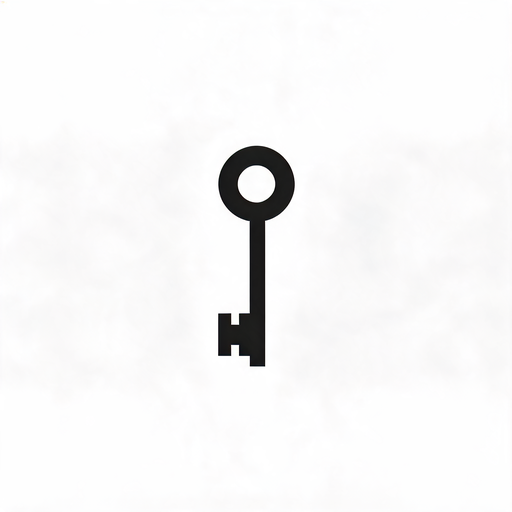
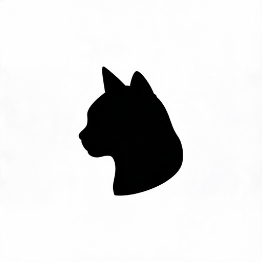

把一张照片拆成两张噪声图，叠在一起就能看到原图。解密不需要电脑，不需要算法，只需要光。
选择一张图片用于加密拆分，也可以上传自己的图片试试。


拖入图片或点击上传
支持 JPG / PNG / WebP点击「拆分」将图片编码为两张噪声图。每张单独看都是随机噪声，不泄露任何信息。
把原图每个像素扩展为 2×2 的子像素块。白像素拆成相同模式，黑像素拆成互补模式。
每张 share 单独看都是 50% 黑白随机噪声，统计上不泄露原图任何信息。
两张 share 重叠时，白像素区域 50% 灰，黑像素区域全黑。人眼自动识别对比度。
RSA 发明人 Shamir 的方案：解密只需把两张透明胶片叠在一起对着光看，零计算量。
Naor, M. & Shamir, A. (1994). Visual Cryptography. EUROCRYPT 1994. LNCS 950, pp 1-12.